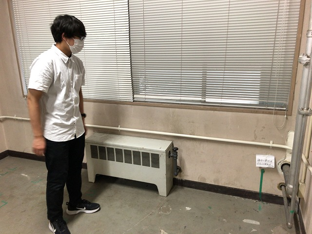
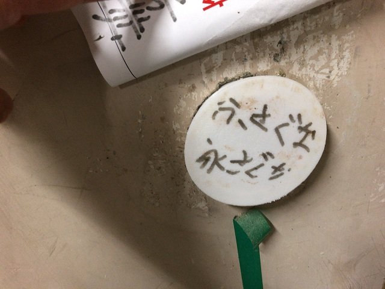
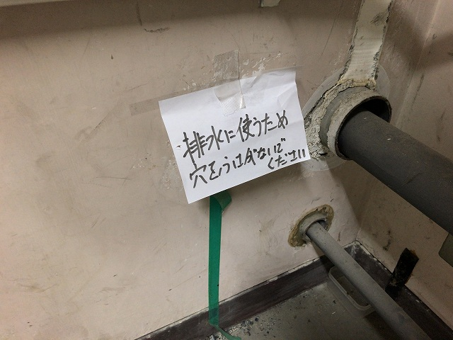
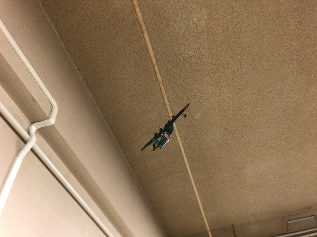
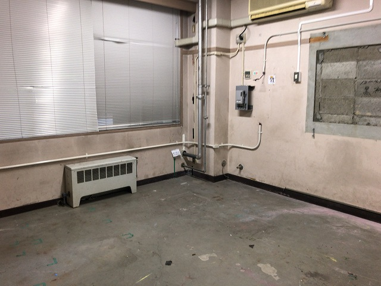
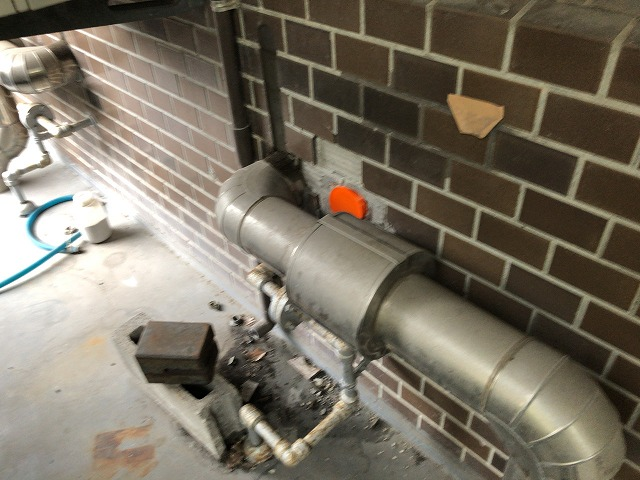
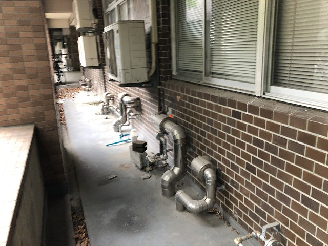
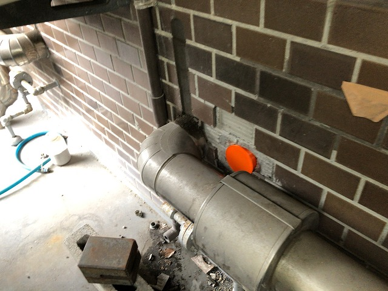

| ・ プラグ (R03.08.11) | |||
内装も粗大ごみもあらかた撤去されました。いよいよ改修工事が始まりますが、忘れてはいけない箇所が１つ。回流水槽の排水孔の確保です。2008年の耐震補強工事で間違ってあけられた孔を利用しています。今度の工事で間違って埋まらないように、B4ヒロキによる３Dプリンタで作った特製封止プラグの設置です。 |
|||
|

どれ？ |

紙をめくると頑丈なプラグ。 | ||
|

塗装屋さんに迷惑かかるかも。 |

取るの忘れてた | ||
|

ヒーターとかいろんな配管ごと撤去されます |

外壁側もプラグ | ||
|

そとの配管もなくなる予定 |

邪魔な配管がなくなり新設の雨水槽へ直結予定 | ||